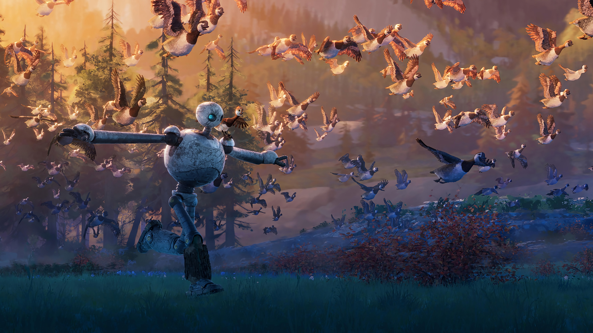
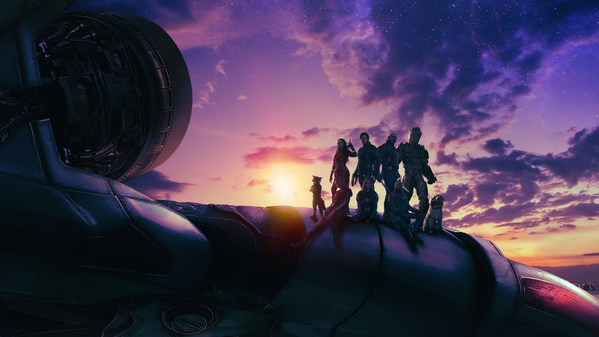
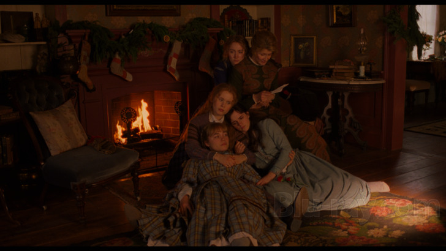

You are stardust. You are alive."
the human side
About This Person
I grew up in a household of six — my father, my mother, and three sisters. Loud, warm, opinionated, and deeply invested in each other. The kind of family where dinner conversations go somewhere unexpected and everyone has something to say about it. That environment is probably responsible for most of who I am.
We believe in karma. Not as a vague idea, but as a real governing principle — that what you put into the world comes back to you, that the good things arriving in your life are the return on something you gave earlier, and that what comes to others is equally theirs. It is a relaxing thought, honestly. It takes the urgency out of wanting to control outcomes and replaces it with something closer to trust in the process.
I study chemical engineering because I am genuinely fascinated by the invisible architecture of things — how molecules behave under pressure, how energy moves through systems, how the difference between two states of matter is just a question of conditions. These are not abstract puzzles to me. They feel like the deepest description of reality we have, and I want to understand them thoroughly.
But I also watch films twice to understand them. I find music terrifying in its accuracy. I think in long sentences and write things down at odd hours. The engineer and the person who needs stories to make sense of the world are not in conflict — they have the same center of gravity. Both are trying to understand something true.
I connect with Grace, from Project Hail Mary — someone who wanted to teach, who ended up doing something much larger almost by accident, just by showing up and being curious. I connect with Jo, from Little Women — the urgency to make something that belongs entirely to you, even when no one around you quite understands the shape of it yet. I am somewhere between those two people, trying to figure out what I am building toward.
This is the archive of that process. It is not finished. It is not supposed to be.
Things That Shape Me
Select a book to explore that world.
Cinema
Project Hail Mary
We are in an era where AI and CGI are everywhere and obvious — you can see the seams in almost every film being made right now. Which is exactly why this one hit differently. The people behind Project Hail Mary chose to do it the old way. Real lighting. Real camerawork. Practical effects. The kind of craft that has no shortcut. And the result is one of the most genuinely beautiful films I have seen — not because of what it shows you, but because of how honestly it was made.
But the craft is almost secondary to what the film is really about. The friendship between Grace and Rocky — a human and an alien trying to understand each other across the most profound possible barrier — is one of the most moving things I have encountered in cinema. And the moment Grace chooses to stay rather than go back to Earth... that was it for me. That was the scene. He didn't go back. He stayed.
I see something of myself in Grace. He wanted to teach. He ended up doing something much larger, almost by accident, just by showing up and being curious. I don't know if I'll ever be that, but I understand the impulse completely.
— the whole film, in four words.
500 Days of Summer
Most films about expectation versus reality just tell you the idea. They show you the disappointment after the fact and you understand it intellectually. This one literally split the screen in two and showed you both at the same time. Left side: what Tom imagined. Right side: what actually happened. You watch them play out simultaneously and the gap between them is almost unbearable.
That choice made the film. Not just cool — necessary. Because that is exactly how disappointment works. You don't experience it as a clean before-and-after. You experience it while the expectation is still running, while the version you wanted is still visible right there, next to the version that's actually happening.
Very relatable. Too relatable, honestly.
— the most honest and most devastating sentence in the film.

The Wild Robot
This is the film I want to keep at my core as an engineer. Forever.
Roz is a robot. She's programmed. She operates exactly as she was designed to. And then the island forces her to encounter something no program can prepare you for — a world that does not care about your directives. She has to learn nature. Not to control it. Not to optimize it. Just to understand it well enough to stop getting in its way.
The moment that broke me was when she has to let Brightbill go with the other geese — even though she wants to protect him, even though everything in her programming says stay close, keep safe. She has to let nature take its toll. She must literally learn nature in order to help nature. That is the whole film. And I think it is also the whole challenge of engineering done right.
This speaks to exactly where we are going in the world right now. We build systems. We optimize. We push. And sometimes we need to stop and actually assess our goals — whether what we are building is helping, or just imposing. That is the question I want to keep asking my whole career.
— the engineering philosophy I want to keep my whole life.

Guardians of the Galaxy Vol. 3
I did not expect this film to do what it did to me.
Rocket's scenes — his origin, what was done to him, what he survived — are so heartbreaking that heartbreaking feels like the wrong word. Disgustingly beautiful. That is the only phrase I have for it. The kind of scene that makes you feel almost guilty for being moved, because what is being depicted is so awful, and yet the way it is rendered is so full of love for the character that you cannot look away.
And the fact that they were all just there for him. The whole team. Not doing anything heroic — just present. That is the part that got me. Not the action. Not the spectacle. Just the presence of people who decided to show up.
— the only words I had for Rocket's arc.

Little Women
I live with my father, my mother, and three sisters. Of course Little Women matters to me. Of course.
But beyond the personal mirror of it — the household full of people with completely different ideas about what a life should look like — what I love about this film is Jo. Her passion. The way she is so completely, almost irrationally driven by the need to make something that belongs to her. There is something I recognize in that urgency even though my version of it looks completely different.
"Just because my dreams are different doesn't mean they are less important." I think about that line more than I expected to. It is not about writing or engineering specifically. It is about the right to take your own direction seriously — to not need it to look like what everyone else is doing in order for it to count.
Sound Documents

Midnights
People always go to Folklore as the obvious answer when someone asks about Taylor. And Folklore is good — of course it is. But Midnights is where I live. The storytelling here is so deeply, deeply relatable that it almost feels unfair. Like she is writing about something specific and somehow also writing about everything.
The production matches the feeling exactly. That is rarer than people think — an album that sounds like what it is about. Midnights sounds like being awake when you shouldn't be. It sounds like the kind of thinking you only do alone. And then there is Bejeweled, which is something else entirely — about owning your power, about remembering that you are the author of your own story. You don't forget that. And Karma, which in my family is not just a concept but a genuine belief. Karma is the breeze in my hair on the weekend — that is not just a catchy lyric. That is a real feeling. Everything good that comes to you is your karma, and what comes to other people is theirs. Karma is a relaxing thought, she says. Yes. It is.

The Tortured Poets Department
31 tracks. The most fucked up, brilliant, authentic, raw music I have ever heard in my life. Every single song is basically poetry. The Stevie Nicks of it all — gut-wrenching, but so, so beautiful.
Who's Afraid of Little Old Me? is one of my favourite songs on the album. It is about owning your power after someone has wronged you. About getting up. And the thing is — it speaks to your character more than theirs. That is a real idea. And then there is this thing the album does that I think is the whole point of music: these songs are not what you would say to someone. You would never actually say these things out loud. But they are absolutely what you think, what lives in your head, what you would never let out. And that is why we can relate. Music gives a voice to the thoughts we carry privately, and that is what makes it matter.
But the song I could talk about for hours is The Manuscript. The production in that song does something I have never heard before — it literally matches the story as it progresses. Throughout the song, loose piano keys. Just individual notes. And then at the moment she sings "she wasn't sure" — those loose keys become full chords. You feel the story shift in real time. A violin comes in. Builds. Fades. And then the bridge arrives — the peak of everything — and after it, the album ends on this: the only thing that's left is the manuscript, one last souvenir from my trip to your shores. Now and then I reread the manuscript, but the story isn't mine anymore. The professor said to write what you know. Looking backwards might be the only way to move forward. I could genuinely spend hours on this album. Hours.
Tapestry
Come on. This is a classic. An actual, undeniable classic. The songwriting on this album is on a level that almost doesn't make sense — every song lands, every lyric earns its place, and the whole thing feels like it was written by someone who simply understood people better than most.
Will You Love Me Tomorrow is probably my favourite Carole King song. There is a vulnerability in that question — asking for permanence while knowing you can't guarantee it — that is completely timeless. You've Got a Friend is what it sounds like to mean something without overcomplicating it. I Feel the Earth Move, Way Over Yonder, You Make Me Feel Like a Natural Woman — that last one is one of the greatest songs ever written. Full stop. There is no argument to be had. Tapestry is the kind of album that makes you understand why albums exist.

A Matter of Time
Genuinely sickening. That is the word. This album is genuinely sickening in the best possible way.
Too Little Too Late is one of the most devastating songs I know. It is about arriving too late — the person is already getting married and you are standing outside of that. I'll toast outside your wedding day, whisper vows I'll never say to you, 'cause it's a little too late. The bridge of that song is the peak of both the story and the production. Everything builds to that point and then the weight of it just lands. Completely.
And then the album has this other energy too — Sabotage is amazing, there is a cheeky badass quality to some of these tracks that balances the devastation perfectly. The deluxe version adds Mad Woman which is fun and catchy in a way that feels like a breath of air, and then I Wait — just I Wait, I Wait, I Wait — which is so sad and so real that it almost shouldn't be allowed. But it is, and it should be.
The Art of Loving
12 tracks. Cohesive in a way that is hard to find. The message is exactly what it says it is — the art of loving — and what she does is show you all the different shapes love takes. Breakup songs. Self-love songs. Happy songs. Songs that are silly and cheeky and kind of feel like manifestation. It is a healing album. The kind you put on when something in you needs to settle.
My favourite song is I've Seen It. The way she talks about love in that song — making something that feels abstract into something completely tangible — is unlike anything else. I've seen it dance with friends around the table, Eleanor, Rosie and Louise. Those are her sisters. And I have three sisters. So of course that line hits differently. The fairytale goes on and on, my mom and dad, they got me hooked. Yes. That is exactly it. And the whole album closes on the line I guess it's been inside me all along. That is everyone's journey with love and acceptance, right? You look everywhere for it and then you realise it was already there. That is a perfect ending. I love this album so much.
Field Notes
On the feeling of not knowing enough yet
There is a specific humility that comes with studying thermodynamics for the first time. You realize that the universe has been operating according to these laws since before any human observed them. The laws did not need to be written down to be true. You are late to something enormous.
I find this comforting rather than discouraging. I am not behind. I am arriving. The archive is older than I am, and there is beauty in that. All I can do is read carefully, work honestly, and not pretend to understand more than I do.
The pretending is the only part that would actually be shameful.
Both things at once
I sometimes feel like two people who have agreed to share one body and are mostly at peace with this arrangement. One of them wants to derive equations and understand how chemical reactors scale and spend years in research. The other wants to sit by water and think about nothing in particular.
They are not in conflict. They have the same center of gravity. Both of them are trying to understand something true. One uses numbers. The other uses feeling. Neither is more honest than the other.
The website you are currently reading is the architecture of that agreement.
What I am building toward
I do not know exactly what I will build with this education. I know it will have something to do with the planet, with resources, with the places where chemistry meets consequence. I know it will require patience. I know it will take longer than I currently expect.
I also know that what I am building toward is not a title or a salary or a position. It is a kind of capacity — the ability to see a complex system and understand it well enough to make it better. That is what engineering is, underneath all the notation.
I am trying to become someone with that capacity. I am somewhere in the middle of that attempt. This archive is the documentation.
Say Hello
If something in here resonated — a film, a thought, a note at 2 AM — I would genuinely like to hear from you. The professional side has a transmission log. This side just has an open door.